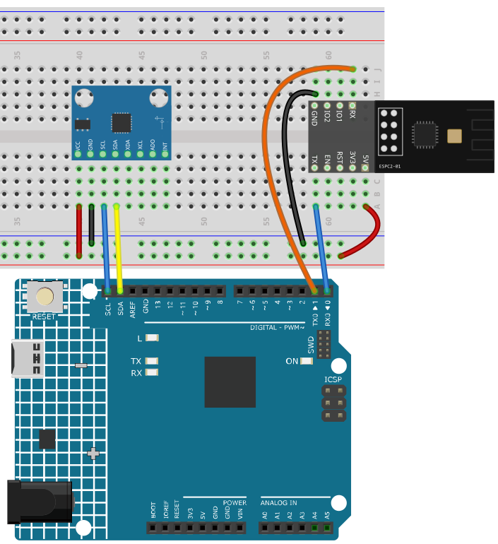

Note
Hello, welcome to the SunFounder Raspberry Pi & Arduino & ESP32 Enthusiasts Community on Facebook! Dive deeper into Raspberry Pi, Arduino, and ESP32 with fellow enthusiasts.
Why Join?
Expert Support: Solve real-life coding problems and technical challenges with our community and team.
Learn & Share: Exchange tips, tutorials, and projects to enhance your skills.
Exclusive Previews: Get early access to new product announcements and sneak peeks.
Festive Promotions and Giveaways: Take part in giveaways and holiday promotions.
👉 Ready to explore and create with us? Click [here] and join today!
16. Bluetooth Motion Monitor
This last project is the only one that talks both ways at the same time.
The board streams the tilt of an MPU6050 to the phone - a notification on C305, twice per second.
The phone can stop and restart that stream by writing
PorSto C304.
Every other chapter used one direction only. Here you watch both, and you can see the difference between the two characteristics clearly: one carries data to you, the other carries your command back.
1. Build the Circuit
Note
The module draws a high current at start-up, so make sure the 9 V battery or an external power supply is plugged into the DC jack of the R4 Minima.


2. Upload the Code
Open the
16-Bluetooth_motion_monitor.inofile under the path ofultimate-sensor-kit\code\iot_project_espc201\bluetooth\16-Bluetooth_motion_monitor.Note
Install Adafruit MPU6050 and Adafruit Unified Sensor from the Library Manager.
Select Arduino UNO R4 Minima and the right port, then click Upload.
Open the Serial Monitor at 115200. You should read:
=== ESPC2-01 Bluetooth (BLE) === [OK] BLE is ready - scan for "SunFounder-C2" on your phone -------------------------------- [OK] MPU6050 is ready Keep the board flat and still - measuring the zero point ... zero: X=-1.0 Y=-3.0 Send S on C304 to start, P to pause
If you read
[!] no MPU6050 found, the sensor is not answering on A4/A5 - check SDA, SCL, VCC and GND before going any further.Note
Leave the board flat and still while it powers up. The sketch takes ten readings in the first second and stores that position as the zero point, so a board lying on the table shows
X:0.0 Y:0.0instead of the few degrees that every sensor has of its own. The two numbers printed on thezero:line are what it measured.
3. Watch and Control at the Same Time
Open LightBlue, tap Scan and connect to SunFounder-C2.
Expand the service 0xA002 and open the characteristic C305, then tap Subscribe. Lines start to arrive twice per second:

X:1.2 Y:-0.4 X:8.7 Y:-3.1
The numbers are degrees.
0means the board lies flat,90means it stands on its edge, and the sign tells you which way it leans.Value
What it is
Xtilt around the X axis - the board leans left or right
Ytilt around the Y axis - the board leans forward or backward
Note
On a real board you will see
X:-1.0 Y:-3.0rather than0.0 0.0. That is not a fault: every MPU6050 is soldered at a very small angle and has a small offset of its own. A few degrees while lying flat is normal, and it does not change what you see when you tilt the board.Close to vertical the two numbers influence each other a little - tilt towards
Y:80andXstarts to move as well. That is how this kind of angle is calculated, not a wiring problem.Now go back to the service list and open C304. Write
P- the stream stops at once and the Serial Monitor printsStreaming paused.
Note
This is the interesting part: the subscription on C305 is still open, but nothing arrives any more, because the board stopped sending. Data only flows when the sketch decides to send it.
Write
Sto start again - the lines come back.
4. Code explanation
Two directions in one loop
while (bleSerial.available() > 0) { // phone -> board char c = (char)bleSerial.read(); if (c == 'S') streaming = true; else if (c == 'P') streaming = false; } if (streaming && millis() - lastSend > interval) { // board -> phone bleSerial.println(line); }
The first block reads, the second writes. Both run in the same
loop()and neither blocks the other - that is why the stream keeps flowing while the phone can still send a command at any moment.Tilt instead of raw acceleration
float tiltX = atan2(ay, az) * 180.0 / PI; float tiltY = atan2(-ax, sqrt(ay * ay + az * az)) * 180.0 / PI;
The sensor reports acceleration in
m/s^2, which is hard to read.atan2turns it into an angle in degrees:0flat,90standing on its side.The zero point
float sumX = 0, sumY = 0; for (int i = 0; i < 10; i++) { float tx, ty; readTilt(tx, ty); sumX += tx; sumY += ty; delay(50); } zeroX = sumX / 10.0; zeroY = sumY / 10.0;
Ten readings are averaged because a single one jumps around by a degree or two. The average is then subtracted from every later reading:
float x = tiltX - zeroX; float y = tiltY - zeroY;
Without this step a board lying flat would show
X:-1.0 Y:-3.0and a student would think something is wrong. With it,0.0really means flat - and that is also how a real product does it (usually with a button to re-zero whenever you like).Half a second between lines
const unsigned long interval = 500; if (streaming && millis() - lastSend > interval) { ... }
BLE cannot carry an endless stream; a line every 500 ms is smooth on screen and still leaves the module time for the command channel. Sending every loop would flood the buffer and make
Parrive late.Why the pause is a flag and not a stop
bool streaming = true;
Nothing in the BLE connection is closed when you send
P- the sketch simply stops writing. The connection, the subscription and the characteristic all stay alive, which is whySworks instantly afterwards.